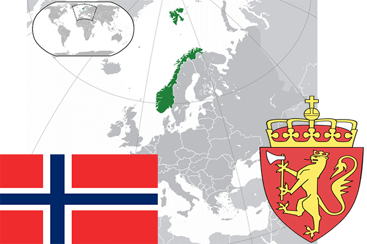

To`liq nomi: Norvegiya Qirolligi
Region: Shimoliy Yevropa
Qonunchilik shakli: Konstitutsiyali Monarxiya
Mustaqillik kuni: 17 may 1814-yil (Daniyadan)
Poytaxt: Oslo
Maydoni: 324,220 km²
Chegaradosh davlatlari: Shvetsiya
Aholisi: 5,267,146 (2017-yil)
Aholi zichligi: 15.8/km2
Aholining o`rtacha yoshi: 81,75 yil (2015-yil)
Rasmiy tili: Norveg tili
Dini: Xristian
Pul birligi: Norvegiya kroni
Telefon prefiksi: +47
Internet domen: .no
Xalqaro tashkilotlarga a`zoligi: BMT, NATO.
Dengiz va okeanlarga chiqishi: Shimoliy Muz okeani
YIM: Butun: $405 mlrd.(2018-yil yanvar) Jon boshiga: $74 400
Yirik shaharlari: Oslo, Bergen, Sandnes